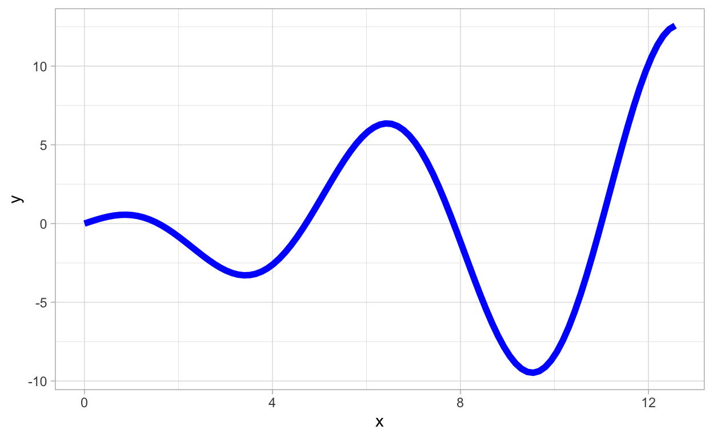

Computation in Biomathematics
As in other scientific disciplines, numerical and scientific computing play a central role in biomathematics. For the purposes of Topics in Biomathematics, we are mainly interested in the numerical solution of mathematical problems, e.g., ordinary differential equations, and scientific visualization, e.g., plotting functions. Numerous computing platforms or environments are used in biomathematics. Some notable options include
The purpose of this document is to provide an introduction to parts of the R computing ecosystem that are particularly useful for biomathematics.
What is R?
R is an open-source statistical computing platform that was developed as an alternative to proprietary statistical software. In the years since its initial release, R has become immensely popular and a vast ecosystem of open-source software has developed around R that greatly enhances its utility in science.
Why R?
Given many other options, why do we focus on R as the computing tool of choice in Topics in Biomathematics? The principal reasons are:
R is free but also well-developed and widely-supported.
Even though it was developed for statistical applications, R works well for numerical computing of the sort that is useful in biomathematics.
The RStudio integrated development environment (IDE) facilitates not only coding in R but also presenting and sharing results so as to align nicely with the course objective Communicate effectively in writing their work in applying the techniques of applied mathematics to problems arising in the life sciences..
Many biologists speak R and it is very helpful to have a common language when collaborating on interdisciplinary problems.
An Introduction to R
In what follows, we illustrate some R commands that will be used commonly throughout the Topics in Biomathematics course. This document is by no means comprehensive. The best ways to learn more about R are
by using the
swirlpackage, andsearching the web for specific topics.
Here is a short video about swirl:
Installing R and RStudio
R and RStudio are both free and easy to install. The videos below can serve as a helpful guide if you want to use them. Alternatively, you can access R and RStudio through a web browser without direct installation via RStudio Cloud. This does require an account but is free to set up.
Installation on Mac
Read this article or watch this video:
Installation on PC
Read this article or watch this video:
RStudio Cloud
Here is an intro to RStudio Cloud:
R as a Calculator
R can be used for basic arithmetic calculations:
(1 + 2) # addition
[1] 3(6 - 4) # subtraction
[1] 2(3*5) # multiplication
[1] 15(8/3) # division
[1] 2.666667(2^3) # exponentiation
[1] 8There are also a number of mathematical functions:
(exp(1))
[1] 2.718282(log(1))
[1] 0[1] 2(log10(10))
[1] 1(sin(pi/4))
[1] 0.7071068(cos(pi/3))
[1] 0.5Sometimes it is convenient to store a value as a variable. The follow
code stores the value of 3 as a variable x and then
multiplies it by 1.5:
x <- 3
1.5*x
[1] 4.5In R, the notation <- is the assignment operator.
You can do arithmetic with variables just like you can with numbers. For example,
x <- 3
y <- 10
(x + y)
[1] 13(x*y)
[1] 30(y^x)
[1] 1000You should always pay close attention to the order of operations when doing arithmetic in R. Use parentheses to make sure you compute what you mean to compute. For example,
((3 - 2) * 6)
[1] 6versus
(3 - (2 * 6))
[1] -9Data in R
There are several common ways to represent different types of data in R. In this section we cover those that are most relevant to biomathematics.
Numeric Vectors
In R, we create a vector or array of values using concatenation with
the operator c. For example,
(a <- c(1,5,-7))
[1] 1 5 -7creates a numeric vector with entries 1, 5, and -7, then we store the
result as a variable called a.
We can perform arithmetic operations on vectors. For example,
b <- c(2,-1,6)
(a + b) # vector addition
[1] 3 4 -1(a-b) # vector subtraction
[1] -1 6 -13(a*b) # elementwise vector multiplication
[1] 2 -5 -42(a^b) # elementwise vector exponentiation
[1] 1.0 0.2 117649.0Question: In the last code block, what is happening
to produce the result corresponding to a^b?
We can also call math functions on vectors. For example,
Note that these math functions are vectorized in that the operate elementwise on a vector.
Character Vectors
We can also create so-called character vectors in R. For example,
(A <- c("calculus","linear algebra", "differential equations"))
[1] "calculus" "linear algebra"
[3] "differential equations"We wont make extensive use of character vectors in Topics in Biomathematics but it is useful to know that they exist.
Matrices in R
The matrix functions allows us to create a matrix in R.
For example,
[,1] [,2]
[1,] 1 3
[2,] 2 4 [,1] [,2] [,3]
[1,] 1 3 5
[2,] 2 4 6 [,1] [,2]
[1,] 1 4
[2,] 2 5
[3,] 3 6 [,1] [,2] [,3]
[1,] 1 2 3
[2,] 4 5 6Lists in R
All of the entries in a vector or a matrix must by of the same type. For example, all numeric values or all characters. In R, lists are a data structure that allow us to store data of mixed types. For example,
[[1]]
[1] 1 2 3
[[2]]
[1] "jason" "graham"
[[3]]
[,1] [,2]
[1,] 1 3
[2,] 2 4$initial
[1] 1 12
$times
[1] 0 1 2 3 4 5 6 7 8 9 10
$values
[,1] [,2]
[1,] 1 12
[2,] 2 13
[3,] 3 14
[4,] 4 15
[5,] 5 16
[6,] 6 17
[7,] 7 18
[8,] 8 19
[9,] 9 20
[10,] 10 21
[11,] 11 22Note that the entries of a list can be accessed using either indexing or names (provided that the list entries are named). For example,
(l1[[2]])
[1] "jason" "graham"(l2[[1]])
[1] 1 12(l2$initial)
[1] 1 12If a list has named elements, we can access the names using the
names function. For example,
names(l2)
[1] "initial" "times" "values" Here is a helpful video on R lists:
Data Frames in R
A data frame in R is a data structure that corresponds to something like a spreadsheet. A data frame is a special type of list object. You can think of a data frame as a cross between a list and a matrix. Here is how you ceate a data frame:
(my_data <- data.frame(course=c("MATH 114","MATH 221","MATH 222","MATH 351", "MATH 341"),
num_students=c(10,12,8,5,7),
level=c("F","F","S","S","T")))
course num_students level
1 MATH 114 10 F
2 MATH 221 12 F
3 MATH 222 8 S
4 MATH 351 5 S
5 MATH 341 7 TNote that a data frame contains rows and columns, every column is a
vector (either numeric or character), and every column has the same
number of entries. The columns of a data frame all have names. We can
also use the names function to determine the column names
of a data frame. For example,
names(my_data)
[1] "course" "num_students" "level" Typically we do not create a data frame by hand, but data is often read in as a data frame. The principal use of data frames in R is that they are the best way to provide data to plotting functions.
Here is a helpful video on R data frames:
Linear Algebra in R
Linear algebra plays a central role in solving problem in biomathematics. This section demonstrates some linear algebra computations that will be used frequently in Topics in Biomathematics performed in R.
Matrix Arithmetic
If \(A\) and \(B\) are matrices of the same size then we can add them. Matrix addition is computed elementwise. We demonstrate this in R.
[,1] [,2] [,3]
[1,] 1 2 -1
[2,] 3 1 0
[3,] 2 -1 2 [,1] [,2] [,3]
[1,] 3 2 -1
[2,] 2 1 -1
[3,] 2 -3 1A + B # matrix addition
[,1] [,2] [,3]
[1,] 4 4 -2
[2,] 5 2 -1
[3,] 4 -4 3We can also multiply a matrix by a number (scalar multiplication). In R
3 * A
[,1] [,2] [,3]
[1,] 3 6 -3
[2,] 9 3 0
[3,] 6 -3 6Recall that if \(A\) is an \(m\times n\) matrix and \(B\) is an \(n \times p\) matrix, then we can form the matrix product \(AB\) which will be a matrix of size \(m\times p\). We demonstrate this in R.
[,1] [,2] [,3]
[1,] 1 2 -1
[2,] 3 1 0
[3,] 2 -1 2 [,1] [,2]
[1,] 3 2
[2,] -1 2
[3,] 1 -1A %*% B # matrix multiplication
[,1] [,2]
[1,] 0 7
[2,] 8 8
[3,] 9 0A special case of matrix multiplication is matrix-vector multiplication. For example,
Matrix Transpose and Determinant
In R, the transpose of a matrix is obtained as follows:
t(B)
[,1] [,2] [,3]
[1,] 3 -1 1
[2,] 2 2 -1and the determinant of a square matrix is computed as
det(A)
[1] -5Eigenvalues and Eigenvectors
Recall that if \(A\) is a square matrix (\(n\times n\)), then an eigenvalue-eigenvector pair is a number \(\lambda\) and a non-zero vector \(v\) satisfying \(Av=\lambda v\). In R, we can compute the eigenvalues and eigenvectors for a square matrix as
(evals_evects <- eigen(A))
eigen() decomposition
$values
[1] 3.1986912 1.7135379 -0.9122292
$vectors
[,1] [,2] [,3]
[1,] -0.5640780 0.1133046 0.4488745
[2,] -0.7696551 0.4763782 -0.7042167
[3,] -0.2990769 0.8719093 -0.5500823Note that the result is an R list that consists of
a vector that contains the eigenvalues, and
a matrix, the columns of which are the eigenvectors.
It is a fact from linear algebra that the determinant of a square matrix is the product of its eigenvalues. Lets confirm this with our example matrix:
Lets also confirm that \(Av=\lambda v\) for the first eigenvalue-eigenvector pair we just computed.
(A %*% evals_evects$vectors[ ,1])
[,1]
[1,] -1.8043114
[2,] -2.4618891
[3,] -0.9566547(evals_evects$values[1] * evals_evects$vectors[ ,1])
[1] -1.8043114 -2.4618891 -0.9566547Functions in R
A function is a programming construct that takes some number of inputs (possibly zero), performs some operations, and returns a value (which may be null). Writing functions is useful in general because it saves from having to rewrite the same code over and over again, makes code easier to read, and facilitates reproducibility. Additionally, code to compute numerical solutions to differential equations requires us to write a function specifying the differential equation. Thus, we are motivated to learn a little about writing functions in R. Suppose we want to create a function that inputs a number, multiplies that number by 2, and returns the result. Here is how you do this:
mult_by_two <- function(x){
return(2*x)
}
Lets call our function:
mult_by_two(3)
[1] 6We can also do the following:
x <- 3
mult_by_two(x)
[1] 6What if we want to multiply by an arbitrary number? One way to do this is as follows:
mult_by_a <- function(x,a=2){
return(a*x)
}
In the function mult_by_a we have an optional argument
with a default value. If a is not specified, we multiply by
2, if a value for a is given then it is used. For
example:
(mult_by_a(3))
[1] 6(mult_by_a(3,a=4)) # a is given by name
[1] 12x <- 4
a <- 6
(mult_by_a(x))
[1] 8(mult_by_a(x,a)) # a is given by position
[1] 24Lets try something a little more interesting. Suppose we want to compute the value of an arbitrary polynomial function. Since the coefficients uniquely determine the polynomial and since R can perform vectorized operations, we can do the following:
Lets test our function:
(poly_func(2))
[1] 1(poly_func(2,coeff_vect=c(3)))
[1] 3(poly_func(2,coeff_vect=c(0,1)))
[1] 2(poly_func(2,coeff_vect=c(0,0,1)))
[1] 4(poly_func(2,coeff_vect=c(1,2,3)))
[1] 17Later we will see more examples of functions in R. In you want to learn more before then, here is a helpful video on writing functions in R:
R Packages
R packages extend the functionality of R by implementing functions
for various tasks. Packages must be installed before they can be used.
Installing packages is easy to do. Either use the
install.packages function or in RStudio use the Install
icon on the Packages tab.
Once you have installed the package or packages you want to use, you
can load them with the library function. For Topics in
Biomathematics we will make heavy use of the plotting packages ggplot2 and ggformula,
and the packages deSolve
and phaseR
for working with differential equations. To install these packages one
can use
install.packages(c("ggplot2","ggformula","deSolve","phaseR"))
You only ever have to install a package once. To load these packages, you run
Packages must be loaded every time you begin a new R session.
Visualization in R
When you present your work you should use figures and plots to
clearly convey your results. As mentioned, the two packages ggplot2 and ggformula
make it possible to create high-quality plots in R. These packages are
powerful and extensive so we will not be able to cover their full
functionality here. Hopefully what is included here is enough to get you
started, at least for the purposes of Topics in Biomathematics.
It should be noted that ggformula is built on top of
ggplot2.
Plotting a Function
Here are two ways to plot a simple mathematical function of the form \(y=f(x)\) in R:
Suppose we want to plot \(f(x) = x\cos(x)\) over \([0,4\pi]\). Then we can do
gf_function(fun = function(x){x*cos(x)},xlim=c(0,4*pi))

or
ggplot(data.frame(x=c(0,4*pi)),aes(x=x)) +
geom_function(fun = function(x){x*cos(x)})
We can modify our plots in various ways. For example,
gf_function(fun = function(x){x*cos(x)},xlim=c(0,4*pi),color="blue",lwd=2)

or
ggplot(data.frame(x=c(0,4*pi)),aes(x=x)) +
geom_function(fun = function(x){x*cos(x)},color="blue",lwd=2)

More on Plots
It is possible to create a variety of different types of plots using
ggplot2 and ggformula,
and plots creating using these packages can be highly customized. As we
go through the Topics in Biomathematics course we will learn a
little more about the utility of these packages. For now, we refer
anyone interested to learn more to this helpful video on
ggplot2:
This
article provides more information on ggformula.
Numerical Solution of Differential Equations in R
A problem that we will often encounter is to obtain a numerical solution to an initial value problem (IVP) for an ordinary differential equation (ODE) or a system of ordinary differential equations (ODEs). An IVP for an ODE or ODEs typically takes the form
\(\frac{d{\bf x}}{dt} = {\bf F}({\bf x}(t),t)\),
\({\bf x}(t_{0}) = {\bf x}_{0}\).
Here \({\bf x}\) is the unknown function of time and \({\bf F}\) is the right hand side function. These may be scalars (in case of a single ODE) or vectors (in case of a system of ODEs). First, we will focus on the case of solving a single scalar ODE, then we will examine systems on ODEs.
For example, we might want to obtain a numerical solution to
\(\frac{dN}{dt} = r N\),
\(N(0) = 10\),
with \(r=0.5\) and over the time interval \([0, 5]\).
In order to obtain a numerical solution to an IVP for ODEs we must provide at minimum the following information to the computer:
A function that describes the right hand side \({\bf F}({\bf x}(t),t)\). Note that \({\bf F}\) may involve parameters whose values will also need to be specified.
A time interval, \([t_{0},t_{f}]\), over which to obtain a numerical solution.
Initial conditions \({\bf x}_{0}\).
Finally, once we have obtained numerical solutions to an IVP for ODEs it is typically desirable to plot these solutions in one way or another. We will also see examples of ways to plot our numerical solutions in R.
Solving a Single ODE
To use the methods described in this section you must make sure that
the deSolve package is installed and loaded. The main
function for obtaining numerical solutions in the deSolve
package is the ode function. In order to use it, we must
write a function in R syntax that describes the right hand side of our
differential equation. Lets do this for our example problem
\(\frac{dN}{dt} = r N\),
\(N(0) = 10\),
with \(r=0.5\) and over the time interval \([0, 5]\).
In addition to describing the right hand side of the differential equation, we must also specify the times at which to obtain the numerical solution and the initial condition. This is done as follows:
Now we are ready to obtain the numerical solution:
Lets look at what has been returned by our call to the numerical
solver, the results of which are stored in the variable
solN.
solN
time N
1 0.0 10.00000
2 0.1 10.51272
3 0.2 11.05171
4 0.3 11.61834
5 0.4 12.21403
6 0.5 12.84026
7 0.6 13.49859
8 0.7 14.19068
9 0.8 14.91825
10 0.9 15.68313
11 1.0 16.48722
12 1.1 17.33254
13 1.2 18.22120
14 1.3 19.15542
15 1.4 20.13754
16 1.5 21.17001
17 1.6 22.25542
18 1.7 23.39648
19 1.8 24.59604
20 1.9 25.85711
21 2.0 27.18283
22 2.1 28.57652
23 2.2 30.04167
24 2.3 31.58194
25 2.4 33.20118
26 2.5 34.90344
27 2.6 36.69298
28 2.7 38.57427
29 2.8 40.55202
30 2.9 42.63116
31 3.0 44.81691
32 3.1 47.11472
33 3.2 49.53034
34 3.3 52.06982
35 3.4 54.73950
36 3.5 57.54605
37 3.6 60.49650
38 3.7 63.59822
39 3.8 66.85897
40 3.9 70.28690
41 4.0 73.89059
42 4.1 77.67904
43 4.2 81.66173
44 4.3 85.84862
45 4.4 90.25017
46 4.5 94.87740
47 4.6 99.74186
48 4.7 104.85574
49 4.8 110.23181
50 4.9 115.88351
51 5.0 121.82499The method from the deSolve package returns a
matrix where the first column contains the time values
at which we obtained numerical solution values and another column that
contains the solution values corresponding to each of the time points.
We can easily plot the solution values versus the time points as
follows:
plot(solN,col="blue")
A nicer plot can be obtained as follows:
ggplot(as.data.frame(solN),aes(x=time,y=N)) + geom_point()
If we want a curve instead:
ggplot(as.data.frame(solN),aes(x=time,y=N)) + geom_line(lwd=1)
We can plot the numerical solution together with the analytical solution \(N(t) = 10e^{0.5 t}\) as follows:
ggplot(as.data.frame(solN),aes(x=time,y=N)) + geom_point() +
geom_function(fun=function(t) 10*exp(0.5*t),color="blue")
Exercise: Modify what we have done using the
deSolve package to obtain and plot a numerical solution to
the IVP
\(\frac{dN}{dt} = r N\),
\(N(0) = 5\),
with \(r=2.5\) and over the time interval \([0, 10]\).
Solving a System of ODEs
Consider the following problem:
\(\frac{dx}{dt}=-R_{0}xy\)
\(\frac{dy}{dt}=R_{0}xy - y\)
with \(R_{0} = 0.2\) and \(x_{0} = 0.95\) and \(y_{0} = 0.05\).
We can code this system of ODEs in R as:
We must specify our time interval and initial conditions:
Now, we are ready to obtain the numerical solution:
Again, the method from the deSolve package returns a
matrix where the first column contains the time values at which we
obtained numerical solution values and another column that contains the
solution values corresponding to each of the time points. We can easily
plot the solution values versus the time points as follows:
plot(SIR_sol,col="blue")

Question: Again, what happens if we change the value of \(R_{0}\) to \(R_{0}=1.5\)?
Often we want to have greater control over our plots and to be able
to make high quality figures. The best way to do this in R is to use the
capabilities of the ggplot2 package. In order to do this,
we will first convert the matrix of solutions returned by the
ode function from the deSolve package into a
data frame. This is basically like an spread sheet format for data.
SIR_sol_df <- as.data.frame(SIR_sol)
We can get a sense of the structure of this data by viewing the first few rows:
head(SIR_sol_df)
time x y
1 0.0 0.9500000 0.05000000
2 0.1 0.9490877 0.04610860
3 0.2 0.9482474 0.04251971
4 0.3 0.9474732 0.03921021
5 0.4 0.9467598 0.03615738
6 0.5 0.9461024 0.03334179It is convenient to change the names of the columns to something more meaningful as follows:
Lets look at the first few rows again:
head(SIR_sol_df)
time susceptible infected
1 0.0 0.9500000 0.05000000
2 0.1 0.9490877 0.04610860
3 0.2 0.9482474 0.04251971
4 0.3 0.9474732 0.03921021
5 0.4 0.9467598 0.03615738
6 0.5 0.9461024 0.03334179Now, we can obtain plots by doing commands like:

or
Here are some other plotting alternatives:
SIR_df_long <- pivot_longer(SIR_sol_df,-time,names_to = "compartment",values_to = "population")
ggplot(SIR_df_long,aes(x=time,y=population,color=compartment)) + geom_line(lwd=1)
or
ggplot(SIR_df_long,aes(x=time,y=population)) + geom_line(lwd=1) + facet_wrap(~compartment)
We can also plot \(x(t)\) and \(y(t)\) together as parametric curves:
Using color to indicate increasing values of time can be interesting:
This color scale may not be the best, lets change it:
ggplot(SIR_sol_df,aes(x=susceptible,y=infected,color=time)) +
geom_path(lwd=1) +
scale_color_viridis_c()
The book (Soetaert, Cash, and Mazzia 2012) covers much more on numerical computing with differential equations in R.
Phase-Plane Methods in R
The phaseR package facilitates the mix of qualitative
and quantitative methods for the analysis of 1- and 2-dimensional
autonomous systems of ODEs. We illustrate its usage.
PhaseR for Scalar Equations
A first-order autonmous scalar ordinary differential equation is one with the general form
\(\frac{dx}{dt} = f(x)\),
where \(f(x)\) is a continuous (usually even differentiable) function that does not depend explicitly on time \(t\) (this is the reason for the word autonomous). Most often, we are interested in the case when \(f(x)\) is a nonlinear function and we sometimes refer to \(\frac{dx}{dt} = f(x)\) as a one-dimensional system.
Example
Consider as an example the equation
\(\frac{dx}{dt} = x(1-x)\).
The left hand side is the derivative \(\frac{dx}{dt}\) and hence the (local) rate of change of \(x\) as a function of time \(t\). Therefore, because of the equal sign, \(f(x)\) must also provide information about the (local) rate of change of \(x\) but now for various state values, that is, values of \(x\).
We can use phaseR to analyze this problem.
First we need to describe the differential equation:
nondim_logistic <- function (t, x, parameters)
{
list(x * (1 - x))
}
Now we plot what is called the phase portrait:
nondim_logistic_phasePortrait <- phasePortrait(nondim_logistic,
ylim = c(-0.5, 1.5),
points = 10,
frac = 0.5)
The arrows here tell us, starting from an initial state value \(x\), whether the solution to the differential equation will increase as a function of time or decrease as a function of time.
Further, we can use phaseR to obtain some trajectories
to our ODE:
There is an general function in phaseR that will carry
out a complete qualitative analysis for an autonomous system (either
one-dimensional or two-dimensional). For example, call the following
function in the R console:
phasePlaneAnalysis(nondim_logistic,xlim = c(0,10),ylim = c(-1.5,1.5),system = "one.dim")
PhaseR for Two-Dimensional Systems
Lets use phaseR to explore the dynamics of
two-dimensional linear autonomous systems.
Consider for example:
\(\frac{d{\bf x}}{dt} = A {\bf x}\),
where \(A\) is a \(2\times 2\) matrix of the form
\(A = \left(\begin{array}{cc} a & 0 \\ 0 & -1 \end{array}\right)\).
Lets examine how various values of \(a\) change the dynamics (specifically the phase portraits) of the systems. Observe that as long as \(a\neq 0\) there is a unique steady-state \({\bf x}^{\ast}={\bf 0}\).
Phase Portraits for Varying \(a\)
a_val <- -2
Lets add some solution curves:
simpleLinear_flowField <- flowField(simple_linear,
xlim = c(-2, 2),
ylim = c(-2, 2),
parameters = c(a=a_val),
points = 19,
add = FALSE)
state <- matrix(c(1,1,1,-1,-1,1,-1,-1,0,2,0,-2,-1,0,1,0),
8, 2, byrow = TRUE)
simpleLinear_trajectory <- trajectory(simple_linear,
y0 = state,
tlim = c(0, 10),
parameters = c(a=a_val),add=TRUE)
Lets plot the numerical solutions as a function of time for specific initial conditions:
Two-dimensional Non-Linear Autonomous Systems
Generally, a two-dimensional autonomous system has the form
\[ \begin{align*} \frac{dx}{dt} &= f(x,y) \\ \frac{dy}{dt} &= g(x,y), \end{align*} \] Such as system is sometimes called a vector field.
Lets adapt our code to examine some phase portraits for a nonlinear system.
First we plot the vector field:
Now we can obtain a more detailed picture of the phase portrait:
nonLinear_flowField <- flowField(non_linear,
xlim = c(-2, 2),
ylim = c(-2, 2),
parameters = NULL,
points = 19,
add = FALSE)
nonLinear_nullclines <- nullclines(non_linear,
xlim = c(-2, 2),
ylim = c(-2, 2),
parameters = NULL,
points = 500)
state <- matrix(c(1.5,1,1.5,-1,-1.5,1,-1.5,-1,
-0.5,1,0.5,1,-0.5,-1,0.5,-1,-1,0,1,0,0,0),
11, 2, byrow = TRUE)
nonLinear_trajectory <- trajectory(non_linear,
y0 = state,
tlim = c(0, 10),
parameters = NULL,add=TRUE)
Observe that steady-states occur where nullclines intersect.
Lets look at the solution curves \(x(t)\) and \(y(t)\):
You can learn more about the functionality of phaseR by
reading this
page or this
article.
Conclusion
We have very briefly touched on the basics of R that is useful in Topics in Biomathematics. If there are specific topics that interest you or there is a specific type of problem you want to try to use R to solve, we recommend searching the web as there is a plethora of tutorials, documentation, and helpful discussions to be found online.